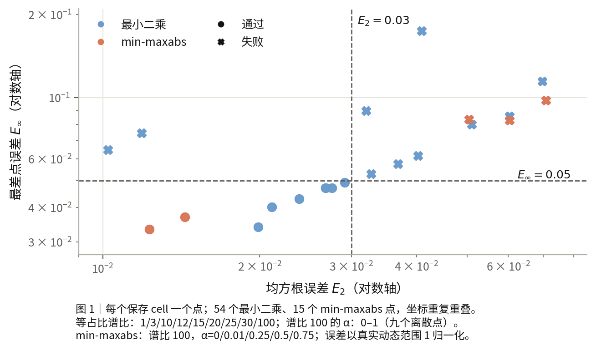
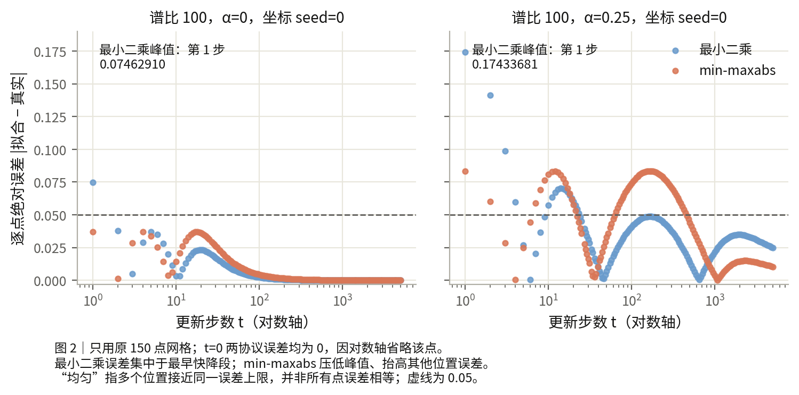

D4：单 sigmoid 拟合何时成功、何时失败
结论
- (a) 经验判定映射：固定特征、全批量 SGD（每步使用全部样本）、样本数与参数数均为 2、学习率 0.1、无动量与衰减时，单 sigmoid 是否通过取决于谱比（快/慢方向曲率比）、慢损失占比 α 和选解协议。 等初始损失五点设计中，最小二乘（选平方误差和最小的保存解）在谱比 1/3/10 各通过 3/3、30/100 各失败 3/3；谱比 100 的九点 α 设计仅 α=0.99/1 各通过 3/3，其余七点各失败 3/3；同条件补充格点在谱比 15 通过 3/3、20 失败 3/3，均方根/最差点误差分别为 0.027550353/0.047113104 与 0.032733550/0.052902145，只把判定变化夹在 15 与 20 之间。

-
(b) 结构结论：谱比 100、两时间尺度均占一定初始损失时，单段形状不足以同时覆盖快降与慢尾，最差点误差不能靠换选解协议消除。 α=0.25/0.5/0.75 的最小二乘最差点误差为 0.17433681/0.08556858/0.11474926；min-maxabs（选最差点误差最小的参数）的数值下界分别为 0.08338322414783761、0.08268412546021864、0.09797454939689487，均 >0.05，各 3/3 坐标核验支持注册网格与参数域内不存在达标参数，图 2 展示 α=0.25 的逐点误差结构。
-
(c) 协议代价：min-maxabs 压低局部误差峰值、使多个位置的误差上限接近，代价是均方根误差增大和拟合中点偏移。 α=0/0.01 各由最小二乘 0/3 通过变为 3/3 通过，均方根/最差点误差降峰后为 0.01437779613/0.03702806721 与 0.01227958828/0.03337965078，均方根误差分别增加 0.00249738653/0.00205599340，中点分别从 3.18633600430/3.21456987380 步移至 3.02359036549/3.08045127144 步（提前 0.16274563882/0.13411860236 步），推翻了增幅至少 0.003 的预测。

- (d) 参数含义：拟合中点和拟合斜率不能直接读作真实半衰期和半高处局部斜率。 等初始损失的谱比 1/3/10/30/100 下，中点相对偏差依次为 −8.99%/−6.53%/+3.95%/+21.96%/+72.40%，斜率相对偏差为 +4.36%/+4.15%/+8.39%/+26.28%/+86.73%。
Formulation
判定判据（注册定义）
以下成功/失败是预先约定的误差判据，不是经验发现：
\[ \text{成功}\iff E_2\le0.03\ \land\ E_\infty\le0.05;\qquad \text{失败}\iff E_2>0.03\ \lor\ E_\infty>0.05. \]
\(E_2\) 是均方根误差，表示各采样点误差平方的平均值再开平方。 \(E_\infty\) 是最大绝对误差，表示最差采样点的误差。 两种误差都除以初始到最终的真实损失差；本报告该差为 1。 以下规则只适用于对数时间轴上的单 sigmoid（把更新步数取对数后呈单段 S 形的函数），且初始/最终平台固定为 1/0。 系统的输入特征在训练中不变，样本数与参数数均为 2。 每步使用全部样本，学习率为 0.1，无动量与参数衰减。 慢方向曲率固定为 0.01，评价使用从 0 到 4997 步的同一 150 点网格。 谱比是快、慢方向曲率的比值。 α 是下降较慢的损失分量占初始总损失的比例。 最小二乘选解从原拟合起点中选平方误差和最小的成功解。
固定特征、全批量 SGD（梯度下降，每步使用全部样本）、无动量与无 weight decay（权重衰减）时，归一化损失遵循已知谱递推。候选 H 是对该损失曲线的近似。以下递推与斜率匹配是解析工具，不作为新发现。
f(t) = alpha·exp(−a_s·t) + (1−alpha)·exp(−a_f·t)
a_i = −2·log(1−eta·lambda_i), tau_i = 1/a_i
H(0) = 1; H(t>0) = 1/[1+(t/t50_fit)^beta_fit]
f(t50_exact) = 0.5; beta_local = −4·t50_exact·f′(t50_exact)
E2 = sqrt(mean_grid((H−f)^2)); Einf = max_grid|H−f|
最小二乘选解：min E2；最大误差选解：min Einf
| 符号 | 含义与单位 |
|---|---|
| t | 更新步数，单位为步。 |
| f=L(t)/L(0)、H | 归一化损失与候选曲线，无量纲。初始/最终平台固定为 1/0。L(t) 是第 t 步损失，L(0) 是初始损失。 |
| alpha | 慢模态（沿慢特征方向的损失分量）的初始损失占比，无量纲，与 α 同义。 |
| i=s/f | 慢/快模态的下标。 |
| lambda_s、lambda_f、lambda_i | 损失 Hessian（二阶导数矩阵）特征值，单位为损失/参数平方。 |
| eta | 学习率，eta=0.1。单位为参数平方/损失。eta·lambda_i 无量纲。 |
| a_i、tau_i | 模态衰减率与时间尺度。单位分别为每步与步。 |
| t50_exact、t50_fit | 真实连续延拓半衰期与拟合中点，单位均为步。 |
| beta_local、beta_fit | 半高处局部参数与拟合参数，均表示对数时间斜率，无量纲。 |
| f′ | 连续延拓损失曲线对 t 的导数，单位为每步。 |
| n、d | 样本数与参数维度，n=d=2。单位分别为样本与参数个数。 |
| E2=RMSE、Einf=maxabs | 均方根误差与最大绝对误差。均除以真实动态范围 1，无量纲。 |
| grid | 原150点评价网格。mean_grid 和 max_grid 分别取网格点上的平均与最大值。 |
等初始损失的解析对照为 f(t)=0.5exp(−a_s t)+0.5exp(−a_f t)，a_i=−2log(1−ηλ_i)。η、λ_i 分别与 eta、lambda_i 同义。连续半衰期满足 f(t50)=0.5，t50 在这里指精确半衰期。半高处局部参数为 βlocal=−4t50f′(t50)，βlocal 与 beta_local 同义。拟合公式中的 t50、β 分别与 t50_fit、beta_fit 同义。
最大误差选解使用 logit(H)=c−beta·x，其中 x=log(t)、c=beta·log(t50_fit)，beta 指 beta_fit。logit(H)=log[H/(1−H)] 是对数几率，expit 是它的反函数。对数时间以步为参照。x、c 与误差界 epsilon 均无量纲。t=0 使用单独固定值 H(0)=1。
成立程度
判定限于固定特征（训练中输入表示不变）的平方损失系统，样本数与参数数均为 2。 所有结果均为 development（用于探索和对照的开发条件），没有封存的分布外验证。 优化器每步使用全部样本，学习率为 0.1，无动量、无权重衰减（参数缩小项）。 使用 float64（双精度浮点），总初始损失为 1。 同一 150 点整数化对数网格从 0 到 4997 步，各点等权。
| 已测条件与选解目标 | 条件通过数 | 坐标检查通过数 | 成立边界 |
|---|---|---|---|
| 慢、快初始损失各 0.5；谱比 1/3/10/30/100；最小二乘 | 3/5 | 9/15 | 原五点设计未测 10 与 30 之间；补充 15/20 格点夹住变化，仍只判定保存选解 |
| 谱为 [0.01,1]；九点慢占比；最小二乘 | 2/9 | 6/27 | 仅 α=0.99/1 通过；没有连续临界占比 |
| 同谱，α=0/0.01；最大误差目标 | 2/2 | 6/6 | 保存参数同时满足两阈值，原失败依赖选解目标 |
| 同谱，α=0.25/0.5/0.75；最大误差目标 | 0/3 | 0/9 | 每个条件有独立数值证书，失败不限于原最小二乘选解 |
最大误差证书限定拟合中点在 [0.01,100000] 步、对数时间斜率在 [0.1,10]。 五个最大误差对照的数值上下界宽均为 5.820766091346741e−11。 独立核验支持这些有限网格、有限参数域内的判定。 证书使用浮点计算，没有严格区间算术（逐项保证舍入误差范围的计算），不能当作连续时间全局定理。 保存选解的均方根误差超过 0.03，也不能证明所有参数的均方根误差都超过 0.03。
最小二乘采用原 6 个起点，不保证找到整个参数域的最优解。 补充等占比单段保存格点为谱比 12/15/20/25，前两点各 3/3 通过、后两点各 0/3 通过；15 与 20 之间尚未扫描，不能报告连续临界值。
谱比 30 的最小二乘失败尚无最大误差目标对照；α=0.1/0.9 也未作该对照。 自由平台（另行拟合上下端值）、级联 sigmoid（组合多段 S 形）、前段预测后段、动量、小批量、训练中更新的特征、固定目标范数均未测量。
方法与条件
原保存判定与预测
- 若两种下降分量初始各占一半，最小二乘选解在谱比 1、3、10 成功，在 30、100 失败。 五个条件的通过数依次为 3/3、3/3、3/3、0/3、0/3。
- 若谱比固定为 100，最小二乘选解仅在慢分量占比 α=0.99、1 成功。 α=0、0.01、0.1、0.25、0.5、0.75、0.9 各为 0/3 通过，α=0.99、1 各为 3/3 通过，原“0.01 与 0.99 都通过”预测只符合 1/2 条件。
- 若谱比为 100、α=0 或 0.01，改选最差点误差最小的参数即可成功。 两条件各为 3/3 通过，均方根/最大误差分别为 0.01437779613/0.03702806721 与 0.01227958828/0.03337965078，原最小二乘选解则各为 0/3 通过。
- 若谱比为 100、α=0.25、0.5 或 0.75，改选最差点误差最小的参数仍失败。 三条件各为 0/3 通过，参数域内最大误差的数值下界分别为 0.08338322414783761、0.08268412546021864、0.09797454939689487，均高于 0.05。
这些是已测点的条件规则，不能写成连续阈值：原五点设计等占比时只知谱比 10 通过、30 失败；补充保存格点已把判定变化夹在 15 与 20 之间，占比扫描只测了 9 个点。 每个条件的 3 次检查只改变坐标，不是 3 份独立数据。 数值下界限于拟合中点在 [0.01,100000] 步、对数时间斜率在 [0.1,10] 的参数范围。 上述规则不涵盖其他谱、自由平台（另行拟合上下端值）或其他优化器。
实验合同与复算
条件为 n=d=2、float64、全批量 SGD、η=0.1、momentum=0、无 weight decay（权重衰减）、固定特征平方损失，λslow=0.01，λfast/λslow∈{1,3,10,30,100}。两模态初始损失各 0.5，总损失 1。每 cell（一个条件与一个坐标种子的保存结果）10000 步。3 个旋转 seed（坐标旋转的随机种子）只作坐标稳健性核验，科学条件数为 5，cell 数为 15。目标参数、参数范数与初始梯度随谱变化。固定的是模态初始损失。
n=d=2、float64、全批量 SGD、eta=0.1/mom0/nodecay（无动量、无权重衰减）、谱[0.01,1]、L0=1、T10000（每条曲线 10000 步）均固定，只有慢初始 loss 占比 alpha 改变。9 条件×3 坐标 seed。拟合、阈值和 150 点整数 log 网格沿用等能量对照。参数范数、初始梯度和目标 Rayleigh 商（目标加权的平均特征值）随 alpha 改变，不能独立归因这些相关量。
候选 H(t)=1/[1+(t/t50)^β]，H(0)=1，上下平台固定 1、0。这是对数时间轴上的 logistic。所有条件使用同一 150 点整数化对数网格，含 t=0，终点 4997，各点等权。均方根误差（RMSE）和最大绝对误差以真实动态范围 1 归一化，分别≤0.03、≤0.05 才称足够。6 个原起点全部成功，15 cell 共 90 个成功解。最佳拟合是多起点局部最小二乘的操作定义，没有全局最优保证。
全部 cell 的合同、请求、源码、NPZ（保存数组的文件）与 receipt（执行回执）中的 metadata hash（元数据哈希）核验通过。已知精确双指数的执行核验最大误差 1.67e−15，初始 loss（损失）最大误差 3.11e−15，执行审计通过，作为执行审计保留而不登记新发现。训练及保存累计 0.476 秒，执行调用累计 0.490 秒。
所有 cell 的 hash、有限值、递推和恢复核验通过。alpha=0.5 与等能量 ratio100 的保存曲线、两误差完全相同。P1 最大执行误差 2.11e−15，是已知理论审计，不登记为发现。
最大误差目标对照复用 alpha=0/0.01 的 6 条保存曲线，0 新训练、6 新拟合 cell。平台、参数范围 t50_fit∈[0.01,100000] 步与 beta_fit∈[0.1,10]、原 150 点网格、归一化和判据不变。原最小二乘参数与误差直接读取保存 summary（结果摘要），没有重新拟合。令 x=log(t)、c=beta·log(t50_fit)，由 logit(H)=c−beta·x 将误差 epsilon 的约束转为 c 的上下线性界。两两比较界得到 beta 的可行区间，二分 epsilon 并取可行区间中点作为参数见证（保存的可行参数解），不调用外部 solver（求解器）。
alpha=0 的最大误差数值界为 [0.037028067163191736,0.0370280672213994]，alpha=0.01 为 [0.033379650732968,0.033379650791175663]。每个界宽 5.8207661e−11。实数上的可行性变换为解析工具，浮点误差界只限定注册离散网格与参数范围，不保证连续时间误差。保存预测的实际 maxabs 与可行上界相差≤1e−12。独立重建预测最大差≤1.11e−16。全部 6 个新数组、metadata 与 receipt 可复算。122 个旧文件 hash/mtime（哈希/修改时间）不变，恢复调用新增 0 cell。首个加续跑拟合调用共 0.060657 秒，低于 1200 秒预算。
alpha=0.25 的最大误差对照使用一科学条件×三坐标 seed。共 3 新拟合 cell、0 新训练。只改选解目标，其余曲线、谱、优化器、平台、参数范围、网格、归一化与阈值同原最小二乘对照。P1 预测数值下界>0.05，P2 预测 maxabs∈[0.07,0.13]。两者均支持 3/3 cell、1/1 条件。配对 RMSE/maxabs 变化仅描述。旧 15/27 训练 cell 与 6 成功拟合 cell 只读，154 历史文件 hash/mtime 不变。先核验首 cell，再续跑。恢复新增 0 cell。两拟合调用累计 0.059152209 秒。每 cell 保存二分 trace（过程记录）与参数见证。独立 expit 重建与多边形裁剪（逐条线性约束缩小可行区域）通过。证书使用 float64 及 1e−12 见证容差，没有严格区间算术。只能用于注册有限网格与参数域。
alpha=0.5 的最大误差对照是一科学条件×三坐标 seed。3 新拟合 cell、0 新训练。全部条件与原 LS（最小二乘）配对。P1 预测下界>0.05，P2 预测 maxabs∈[0.06,0.09]。两者均支持 3/3 cell、1/1 条件。执行显式绑定唯一冻结提交，每次新增拟合前全量核对成功结果、回执与文件集合。178 历史文件 hash/mtime 不变。先核验首 cell，再续跑。恢复新增 0 cell。两拟合调用累计 0.057776667032158 秒。独立 expit、误差复算和半平面裁剪通过。float64 证书与 1e−12 见证容差不属于严格区间算术。
alpha=0.75 的最大误差对照是一科学条件×三坐标 seed。3 新拟合 cell、0 新训练。P1 预测数值下界>0.05，P2 预测 maxabs∈[0.07,0.11]，均支持 3/3 cell、1/1 条件。只改变选解目标及对应算法；原 LS 参数直接读取保存结果，没有重新最小二乘拟合。预注册依据旧 alpha=0.75 LS 数字及 alpha=0.25/0.5 已测误差界，不称盲发现。显式绑定唯一冻结提交，先全局恢复预扫描，再核验首 cell 和续跑。202 个历史文件和6个新结果文件 hash/mtime 不变；恢复新增0个 cell。两次新增拟合调用累计0.06936995801515877秒，含恢复的三调用累计0.09296287503093481秒。独立 expit 重建误差≤1.1102230246251565e−16，半平面裁剪核验通过。
保存选解的概括值
表内误差沿用原报告的概括精度，完整范围保留在下方。
| 慢占比 | 最大误差选解 RMSE / maxabs | 判定 |
|---|---|---|
| 0 | 0.01437779613 / 0.03702806721 | 通过 |
| 0.01 | 0.01227958828 / 0.03337965078 | 通过 |
| 0.25 | 0.05041269241 / 0.08338322420 | 不足 |
| 0.5 | 0.06037167065 / 0.08268412550 | 不足 |
| 0.75 | 0.07083688813 / 0.09797454944 | 不足 |
保存误差与参数的完整记录
P1、P2、P3 是各对照的原预注册预测编号。seed 指坐标旋转的随机种子。下表保留各条件的误差范围。
等模态初始损失的五点谱比结果如下。谱比 10 是原描述条件，没有方向预测。
| λfast/λslow | 最佳 RMSE，3 seed 范围 | 最大绝对误差，3 seed 范围 | 判定 |
|---|---|---|---|
| 1 | 0.0267919291351284–0.0267919291351285 | 0.047170128759–0.047170129351 | 足够，原 P2 支持 |
| 3 | 0.0198793509520944–0.0198793509520945 | 0.034031538251–0.034031538352 | 足够，原 P2 支持 |
| 10 | 0.0210890207170545–0.0210890207170546 | 0.040145009566–0.040145009593 | 足够，原描述条件 |
| 30 | 0.0402882974513003–0.0402882974513004 | 0.061662072800–0.061662072876 | 不足，原 P3 支持 |
| 100 | 0.0602851871806205–0.0602851871806206 | 0.085568582571–0.085568582652 | 不足，原 P3 支持 |
固定谱[0.01,1]、eta=0.1/mom0（无动量）、L0=1 和原网格时，九点慢模态占比结果如下。L0 是总初始损失。
| alpha | RMSE（3 seed 范围） | 最大误差（3 seed 范围） | 判定 / 预测 |
|---|---|---|---|
| 0 | 0.01188041–0.01188041 | 0.07462910–0.07462910 | 不足。仅描述 |
| 0.01 | 0.01022359–0.01022359 | 0.06476095–0.06476095 | 不足。P2 反例 |
| 0.1 | 0.03199348–0.03199348 | 0.08975413–0.08975414 | 不足。仅描述 |
| 0.25 | 0.04090645–0.04090645 | 0.17433681–0.17433681 | 不足。P3 通过 |
| 0.5 | 0.06028519–0.06028519 | 0.08556858–0.08556858 | 不足。P3 通过 |
| 0.75 | 0.06974371–0.06974371 | 0.11474926–0.11474926 | 不足。P3 通过 |
| 0.9 | 0.05101250–0.05101250 | 0.07995095–0.07995095 | 不足。仅描述 |
| 0.99 | 0.02914083–0.02914083 | 0.04937291–0.04937291 | 足够。P2 通过 |
| 1 | 0.02679193–0.02679193 | 0.04717013–0.04717013 | 足够。仅描述 |
alpha=0/0.01 的两种选解及同坐标配对差如下。
| alpha | 原最小二乘 RMSE / maxabs | 最大误差选解 RMSE / maxabs | 新−旧 RMSE / maxabs | 两阈值同时通过 |
|---|---|---|---|---|
| 0 | 0.01188040961 / 0.07462910449–0.07462910489 | 0.01437779613 / 0.03702806721 | +0.00249738653 / −0.03760103768 至 −0.03760103728 | 3/3 通过 |
| 0.01 | 0.01022359488 / 0.06476095049–0.06476095218 | 0.01227958828 / 0.03337965078 | +0.00205599340 / −0.03138130140 至 −0.03138129972 | 3/3 通过 |
alpha=0.25 的保存曲线改用最大误差选解后仍不足。三坐标 seed 的 RMSE 为 0.05041269241012166–0.05041269241012175，maxabs 为 0.08338322419501444–0.08338322419501458。相对原最小二乘，RMSE 增加 0.009506239989461297–0.009506239989461332，maxabs 减少 0.09095358172777990–0.09095358221997817。两指标仍超过 0.03/0.05。
alpha=0.5 的保存曲线改用最大误差选解后仍不足。三坐标 seed 的 RMSE=0.06037167065143022–0.06037167065143029，maxabs=0.08268412550007484–0.08268412550007492。同 seed 相对原最小二乘，maxabs 减少 0.0028844570710173100–0.0028844571521180334，RMSE 增加 0.00008648347080969510–0.00008648347080971591。数值界[0.08268412546021864,0.08268412551842630]宽 5.820766091346741e−11，下界>0.05。
alpha=0.25 的最小最大误差 float64 数值界为 [0.08338322414783761,0.08338322420604527]，宽 5.820766091346741e−11，三个 seed 同界。
alpha=0.75 的最大误差选解 RMSE=0.07083688813461789–0.07083688813461816，maxabs=0.09797454943632976–0.09797454943633009。三个 seed 的 min maxabs 数值界均为 [0.09797454939689487,0.09797454945510253]，宽 5.820766091346741e−11。
同 seed 相对原最小二乘，alpha=0.75 的 maxabs 减少 0.01677470815592365–0.016774708382845796，RMSE 增加 0.0010931745394508335–0.0010931745394509168。参数见证 t50_fit=119.96164200684001–119.96164200684076步，beta_fit=0.7412374677525078–0.7412374677525105。真实连续延拓半衰期仍为 202.63117087422313步，来自原保存结果。拟合中点仍不能当作真实半衰期。最大残差位置从原10步移到1723步。
alpha=0/0.01 的最大误差选解 t50_fit/beta_fit 分别为 3.02359036549 步/1.54682735344 与 3.08045127144 步/1.50913825752。真实连续半衰期仍为 3.2894067395 与 3.3369414574 步，不能将拟合中点当作真实半衰期。最大残差位置由原 step1 移到 18/17。
alpha=0.25 的新 t50_fit=6.106741398761212–6.106741398761244步，beta_fit=0.6791496385404663–0.6791496385404676。真实连续半衰期为 5.1650409882770125 步。最大残差位置由原 step1 移到 166。拟合中点仍不能当作真实半衰期。
alpha=0.5 的最大误差参数见证 t50_fit=27.640329970560757–27.640329970560980步，beta_fit=0.5361017690313967–0.5361017690313976。真实连续半衰期为 16.316431977857476 步。最大残差位置由1798步移到1877步，拟合中点仍不能解释为真实半衰期。
全曲线拟合 t50 相对精确半衰期的偏差按谱比依次为 −8.99%、−6.53%、+3.95%、+21.96%、+72.40%。拟合 β 相对 βlocal 的偏差为 +4.36%、+4.15%、+8.39%、+26.28%、+86.73%。因此不能直接用真实半衰期与局部斜率替代最佳拟合参数，也不能用宽谱的拟合参数直接解读真实局部动力学。
谱比 3 的误差低于纯指数对照 1。误差在五点设计中不单调。原五点设计没有扫描 10 与 30 之间的条件；补充保存格点在 15 与 20 之间发生判定变化，仍不能报告连续临界点。精确时间尺度比为 1、3.0030、10.0453、30.4440、105.3078，不能把特征值比当作精确时间尺度比。
原始时间轴的正权双指数严格凸（曲线始终向上弯曲）是解析性质。对数轴拟合不能证明原始时间轴呈 S 形。
等能量 ratio10 保留为描述条件。
失败与反例
- 最大误差目标对照的通过预测与数值区间预测均成立（2/2 条件、6/6 坐标 cell）。配对预测被推翻。maxabs 实际减少 0.03760104 与 0.03138130，超过预期的 0.015，但 RMSE 只增加 0.00249739 与 0.00205599，低于预期的 0.003。6/6 cell 违反 RMSE 增幅判据。
- 原“alpha=0.01 与 0.99 全部通过”预测被 alpha=0.01 的 3/3 坐标 cell 推翻（P2 refuted，即被推翻），alpha=0.99 的 3/3 通过。条件计数为 1/2。原“0.25/0.5/0.75 全部不足”预测成立（P3 supported，即获支持），条件计数为 3/3，cell 为 9/9。
- 局部参数公式只在 ratio=3 同时通过原阈值。ratio=1 的全曲线拟合通过而局部公式失败。拟合中点和斜率不能一律解释为真实半衰期和真实局部斜率。
- 最早的合同提交因 git 写权限拒绝而未启动训练或拟合。旧失败记录保留。后续执行完成与收尾修复已核验，不把无测量会话计为实测证据。
纯快模态 alpha=0 的原最小二乘选解超过最大误差阈值，纯慢模态 alpha=1 通过。seed0（坐标 seed 为 0）的 alpha=0/0.01 原最大残差都在 step1。因此原失败不能全部归因于两阶段下降。同一绝对 step（更新步数）网格对快慢衰减的采样位置不同是竞争解释，尚未隔离。原判定只针对注册最小二乘选解。新的最大误差选解已给出 alpha=0/0.01 同时过阈值的参数见证。该反例不证明整个 logistic 参数族都无法通过两阈值。
alpha=0.25 在 maxabs≤0.05 下另有保存点的直接矛盾见证。step1 下界与 step10 上界要求 beta≥0.822477112273925。step152 下界与 step15 上界要求 beta≤0.487369166379817。三 seed 均矛盾，60 位 Decimal（十进制高精度算术）复算通过。该核验只读保存数据，没有新拟合。
配对误差在两项指标上可以方向相反。alpha=0.25 相对 0.5 的 RMSE 减少 0.01937873，但最大误差增加 0.08876822。完整同 seed 差值见证据。不对坐标 seed 给统计区间。
两时间尺度均占一定初始损失时，保存数值证书支持单段形状受限：注册网格与参数域内无达标解。把失败具体归因为时间尺度分离不足，仍缺少受控机制证据。时间尺度分离产生两阶段下降也只是兼容解释。评价窗口、采样权重和自由平台可能改变判定，尚未作对照。
拟合中点不能直接当作真实半衰期，拟合斜率也不能一律当作真实局部斜率。在等初始损失的五点谱比设计中，局部公式（由真实半衰期与半高处斜率给定参数）生成的曲线只有 ratio（谱比）=3 同时通过原阈值。ratio=1 的局部公式 RMSE=0.03335、最大误差=0.06637，而全曲线拟合通过。
未决问题
下一小问题可只复用保存 alpha=0.9 的三条曲线。固定 n=d2、谱[0.01,1]、eta=0.1/mom0/nodecay（无动量、无权重衰减）、L0=1/T10000、平台1/0、t50_fit∈[0.01,100000]步，beta_fit∈[0.1,10]、原 150 点网格与 0.03/0.05 阈值。问题仍为 min maxabs 数值下界是否>0.05。须先注册新的具体数值预测、源码与输入 NPZ/summary hash，一次提交并绑定唯一 commit 后才拟合。0 新训练，不重跑已有成功拟合。alpha=0.75 的本次检验已完成。仅作 development 有限网格参数域数值声明。
当前尚未隔离采样位置/权重，也未测试自由平台、前段预测、learned features 或 sealed OOD。没有连续临界 alpha/谱比，不把拟合中点当作真实半衰期。
证据
程序第 2 轮（D4 第 1 轮）因 .git/index.lock 写权限被拒，没有提交成功，也没有训练或拟合。supervisor 随后于 2026-10-06T17:24:51+08:00 将合同与 pinned（冻结）源码提交为 91fc940b310612a5b0a157366ffb97168160db8e。第 10 轮先核验该提交与执行 HEAD（当时检出的提交）的文件 hash，再执行首 cell、核验并续跑。原失败 finding 与 summary 快照保留，不能将旧轮算成完成测量。中心 rounds_done（累计会话数）是会话计数，包含未执行实验的轮次。
r010 收尾提交 37ee424 的旧产物与中心更新已在第 18 轮核验。15 个成功 cell 保留。谱比扫描不能给出 10 到 30 间临界点。
证据：r010 findings（findings/r010_two_mode_logistic_resume.md）、可复算 summary（studies/r002_two_mode_logistic/summary.json）、冻结预注册（studies/r002_two_mode_logistic/preregistration.json）、全量 hash 与递推核验（studies/r002_two_mode_logistic/executed/saved_evidence_verification.json）。summary 中 round=2 是合同轮次，本次执行轮为 10。旧失败证据见 r002 findings（findings/r002_two_mode_logistic.md） 与 studies/r002_two_mode_logistic/executed/summary_r002_blocked.json。
第 18 轮新合同与 pinned（冻结）源码提交 c07224e 先于 27/27 cell 训练。
新增证据：r018 findings（findings/r018_slow_energy_logistic.md）、summary（studies/r018_slow_energy_logistic/summary.json）、全量核验（studies/r018_slow_energy_logistic/executed/saved_evidence_verification.json）、r010 收尾审计（studies/r018_slow_energy_logistic/executed/r010_closeout_audit.json）。
r018 收尾产物提交 8f96d0030a200bf707d7ea995b310aa0cec6f574 与 receipt bbfc9c5 已核验。122 个旧 studies 文件、15/27 cell、summary/NPZ 与提交/receipt 一致。最大误差目标对照的只读审计见 previous_closeout_audit.json（studies/r038_maxabs_objective/executed/previous_closeout_audit.json）。
最大误差目标对照证据：r038 findings（findings/r038_maxabs_objective.md）、summary（studies/r038_maxabs_objective/summary.json）、预注册（studies/r038_maxabs_objective/preregistration.json）、提交核验（studies/r038_maxabs_objective/executed/preregistration_commit_verification.json）、独立复算（studies/r038_maxabs_objective/executed/independent_saved_review.json）、误差界独立核验（studies/r038_maxabs_objective/executed/certificate_verification.json）、恢复核验（studies/r038_maxabs_objective/executed/resume_verification.json）。冻结提交 299f6cf8df38da4ea811596755fd8b1317007eff 早于全部新拟合。新 P1/P3 supported，P2 refuted，保留全部失败记录。
alpha=0.25 最大误差对照冻结提交 7176d1e9e5e7293f38018994c24c00d9e6d6909e 早于全部3新拟合。P1/P2均supported，0新训练。证据：r050 findings（findings/r050_alpha025_maxabs.md）、summary（studies/r050_alpha025_maxabs/summary.json）、预注册（studies/r050_alpha025_maxabs/preregistration.json）、提交核验（studies/r050_alpha025_maxabs/executed/preregistration_commit_verification.json）、旧收尾审计（studies/r050_alpha025_maxabs/executed/previous_closeout_audit.json）、独立证书（studies/r050_alpha025_maxabs/executed/certificate_verification.json）。旧数字与失败预测均保留。
阈值直接见证与独立误差复算：independent_threshold_verification.json（studies/r050_alpha025_maxabs/executed/independent_threshold_verification.json）、源码（studies/r050_alpha025_maxabs/executed/threshold_witness.py）。
科学收尾提交与核验回执：final_commit_verification.json（studies/r050_alpha025_maxabs/executed/final_commit_verification.json）。
alpha=0.5 最大误差对照冻结提交6f7c3355e6936f7648156ba89c89d6a8f4edec3e早于全部3新拟合。P1/P2均supported，0新训练。证据：r082 findings（findings/r082_alpha050_maxabs.md）、summary（studies/r082_alpha050_maxabs/summary.json）、预注册（studies/r082_alpha050_maxabs/preregistration.json）、提交核验（studies/r082_alpha050_maxabs/executed/preregistration_commit_verification.json）、旧收尾审计（studies/r082_alpha050_maxabs/executed/previous_closeout_audit.json）、独立证书（studies/r082_alpha050_maxabs/executed/certificate_verification.json）、独立复算（studies/r082_alpha050_maxabs/executed/independent_review.json）、恢复核验（studies/r082_alpha050_maxabs/executed/resume_verification.json）、科学收尾回执（studies/r082_alpha050_maxabs/executed/final_commit_verification.json）。
alpha=0.75 最大误差对照冻结提交bd67bcf22d3bae14b35eb58a9a03d0501a13d5d1早于全部3新拟合。P1/P2均supported，0新训练。报告按 inbox 六节顺序的单独重排提交为020116c，旧数字和结论保留。证据：r094 findings（findings/r094_alpha075_maxabs.md）、summary（studies/r094_alpha075_maxabs/summary.json）、预注册（studies/r094_alpha075_maxabs/preregistration.json）、提交核验（studies/r094_alpha075_maxabs/executed/preregistration_commit_verification.json）、旧收尾审计（studies/r094_alpha075_maxabs/executed/previous_closeout_audit.json）、独立证书（studies/r094_alpha075_maxabs/executed/certificate_verification.json）、恢复后独立复算（studies/r094_alpha075_maxabs/executed/independent_review.json）、恢复核验（studies/r094_alpha075_maxabs/executed/resume_verification.json）、科学收尾回执（studies/r094_alpha075_maxabs/executed/final_commit_verification.json）。
报告修正的补充来源：同条件单段边界 summary（../D12_cascade_sigmoid/studies/r028_gap_cascade/summary.json），仅引用其 single 字段的谱比 12/15/20/25 保存结果，不引用双段候选判定。
点图及复算：图 1 SVG（figs/decision_map.svg）、图 2 SVG（figs/pointwise_errors.svg）、只读绘图源码（figs/plot_report_fix.py）、定义与科学自查（findings/report_fix_audit.md）。
整合证据清单（协调者 2026-10-08 抽取）
| 轮 | 问题 | 注册判据 | 结果 | 范围 |
|---|---|---|---|---|
| r002/r010 | 等初始损失双模态，谱比何时超阈值 | RMSE≤.03 且 maxabs≤.05，LS 选解 | 1/3/10 各 3/3 过；30/100 各 0/3 | n=d=2，η=.1，float64，全批量，平台 1/0，3 坐标 seed |
| r018 | 谱比 100 下 α 的作用 | 同上 | 仅 α=.99/1 各 3/3 过；α=0/.01/.1/.25/.5/.75/.9 各 0/3；P2（.01 与 .99 都过）refuted | 同上，9 点 α |
| r038 | α=0/.01 改 min-maxabs 选解 | 同上 + 配对增幅判据 | 各 3/3 过；P2（RMSE 增 ≥.003）refuted（增 .00250/.00206）；证书 gap 5.82e-11 | 0 新训练，6 拟合 cell |
| r050/r082/r094 | α=.25/.5/.75 的 min-maxabs 下界 | 下界 >.05 | 各 3/3 支持；下界 .083383/.082684/.097975 | 0 新训练，各 3 拟合 cell |
| r028（D12 引用） | 谱比 12/15/20/25 空档 | 单段阈值 | 12/15 过、20/25 失败 | 仅 single 字段 |
常量：级联无拟合公式 h_i=log2/a_i、b=2log2≈1.386294（D12 验证）；a_i=−2log(1−ηλ_i)；中点相对偏差 −8.99/−6.53/+3.95/+21.96/+72.40%（谱比 1/3/10/30/100）；斜率偏差 +4.36/+4.15/+8.39/+26.28/+86.73%；min-maxabs 参数域证书区间宽度均 5.820766091346741e-11；网格=150 点整数化对数 0..4997 等权；min-maxabs 参数界 t50∈[0.01,1e5] 步、β∈[0.1,10]，二分容差 1e-10。
未入 summary 的痕迹数字（仅存于 findings/executed）：r010 执行调用 0.490s、expit 重构 ≤1.11e-16、α=.25 见证 β 界（≥.822477112273925 与 ≤.487369166379817）、60 位 Decimal 复核、各轮 commit 哈希。读者如需复核这些细节，按证据节链接到 executed/ 原件。